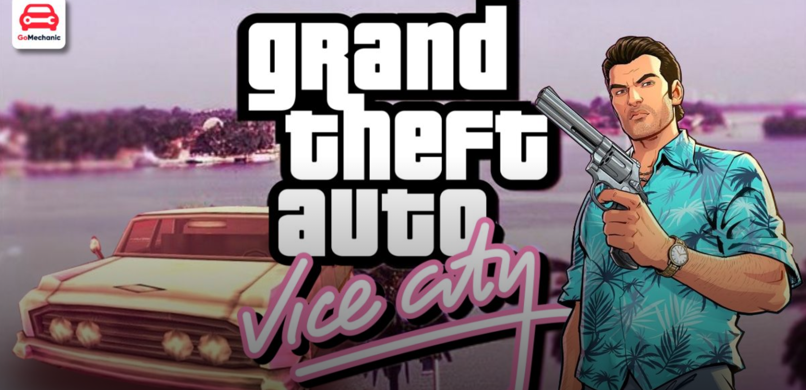

Grand Theft Auto: Vice City

- Developer(s):Rockstar North.
- Publisher(s): Rockstar Games.
- Programmer(s):Obbe Vermeij, Adam Fowler, Alexander Roge.
- Producer(s): Leslie Benzies.
- Writer(s): Dan Houser, James Worrall.
- Platform(s): PlayStation 2..
- Release:29 October 2002.
- Mode(s):> Single-player.
Grand Theft Auto: Vice City is an action-adventure game played from a third-person perspective.
The player controls criminal Tommy Vercetti and completes missions—linear scenarios with set objectives—to
progress through the story.
It is possible to have several missions available at a time, as some missions require the player to wait for
further instructions or events.
Outside of missions, the player can freely roam the game's open world and has the ability to complete optional
side missions.
Composed of two main islands and several smaller areas, the world is much larger in area than earlier entries in
the series.
The islands are unlocked for the player as the story progresses